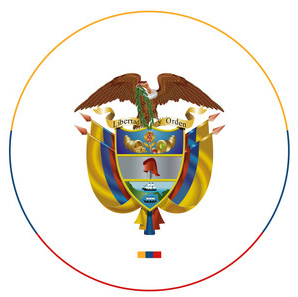

Unidad para las víctimas
Bienvenido al repositorio del procedimiento
En este apartado encontrará todo lo necesario para comprender el funcionamiento del procedimiento Novedades y Actualizaciones, a su vez,
podrá visualizar toda la documentación y lineamientos del procedimiento, y por último hacer uso de los diferentes tableros de control,
los cuales dan cuenta del trabajo extenso y sifnificativo que representa este procedimiento misional de la Unidad para las Víctimas.